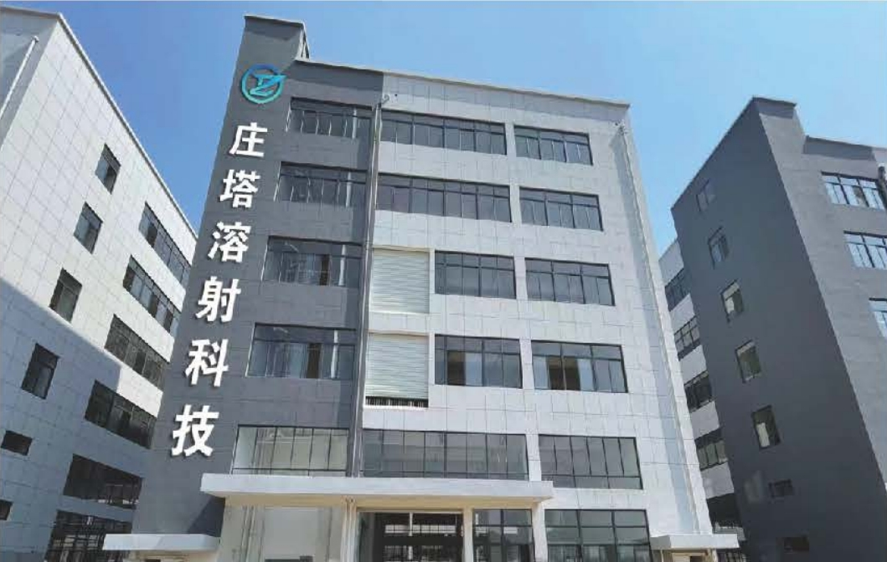
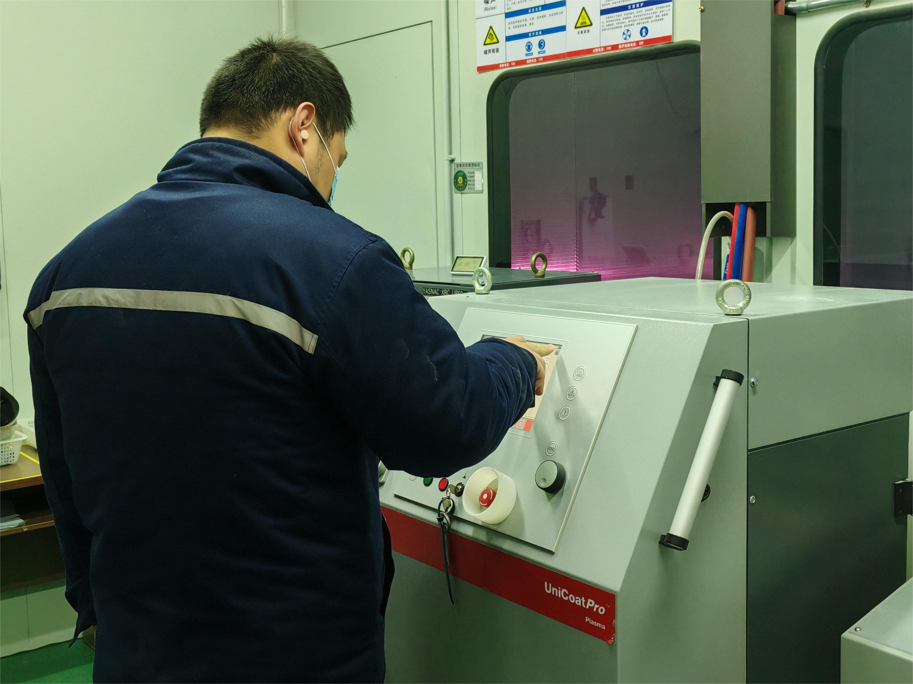
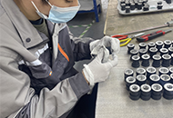
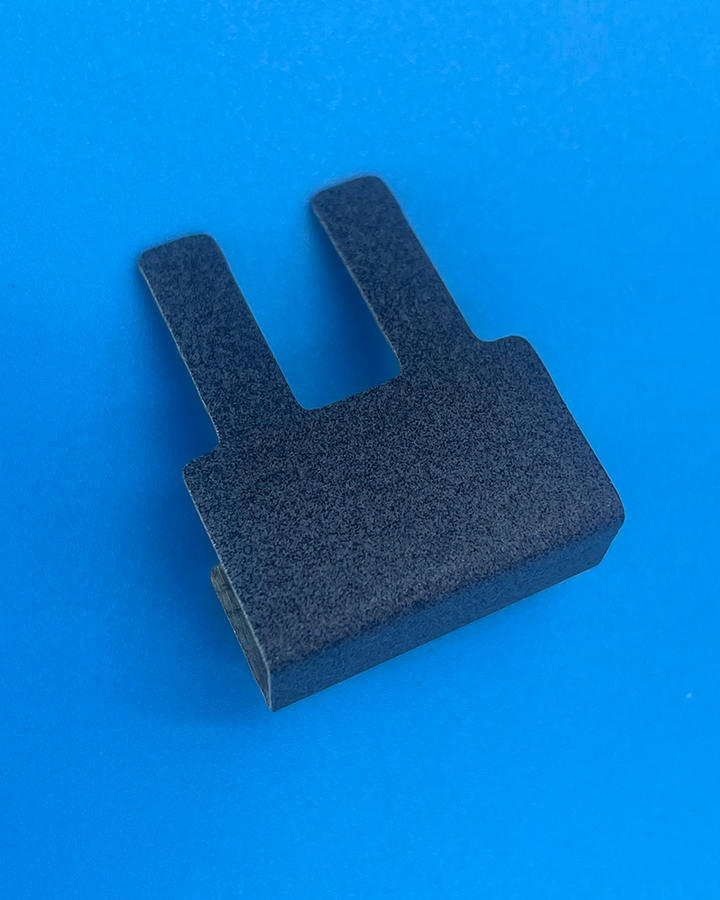
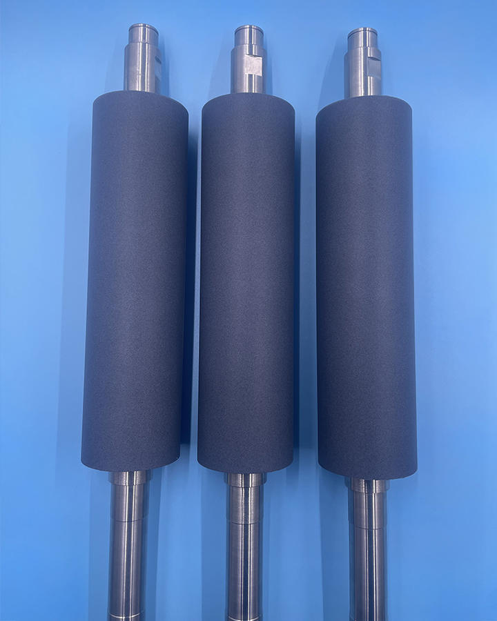
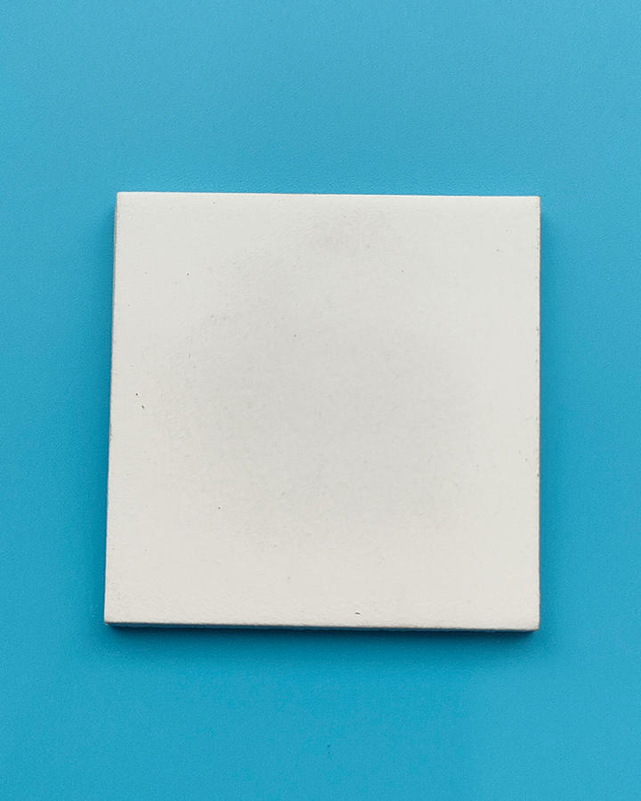

自有能力
聚焦功能性涂层工艺，面向高端设备核心部件提供稳定加工服务。
WHY ZHUANGYU

聚焦功能性涂层工艺，面向高端设备核心部件提供稳定加工服务。
根据零件基材、使用环境与性能目标，制定针对性的涂层方案。

持续沉淀热喷涂与表面改质经验，以工艺窗口和验证数据驱动交付。

坚持有依据、有分析、有记录的质量控制，让关键结果可复核。
PRODUCTS

低表面能与耐磨耐腐蚀协同，适用于粘附控制和易清洁工况。

以氧化铝陶瓷体系提升电绝缘与耐久表现，服务高端装备部件。

通过陶瓷与金属陶瓷体系应对磨损、腐蚀及复杂工艺环境。
ENGINEERING PROCESS
先确认失效机制与性能目标，再选择材料体系和喷涂工艺；以样件验证、过程控制和出货检验形成闭环。

ABOUT ZHUANGYU
公司于 2021 年正式成立，相关业务始于 2015 年，位于杭州建德，聚焦高端设备核心部件的等离子溶射与表面改质。
业务面向半导体显示、新能源锂电、光伏、石油化工与航空航天等领域，重点提供防粘、绝缘、耐磨和耐刻蚀等功能性涂层。
FAQ
建议提供零件基材、尺寸、工作温度、介质环境、主要失效形式和目标性能，以便判断可行的材料与工艺路线。
可以。涂层不是只按名称选择，需要结合粘附、磨损、腐蚀、电绝缘或等离子体环境等实际需求综合设计。
一般包括需求澄清、材料与工艺设计、样件验证、结果复核以及量产过程控制，具体周期以零件和验证要求为准。
CONTACT
提交零件材质、尺寸、使用环境与目标性能，我们将协助梳理可验证的技术路线。
公司浙江庄誉科技有限公司
地址待邹总确认
电话待邹总确认
邮箱待邹总确认